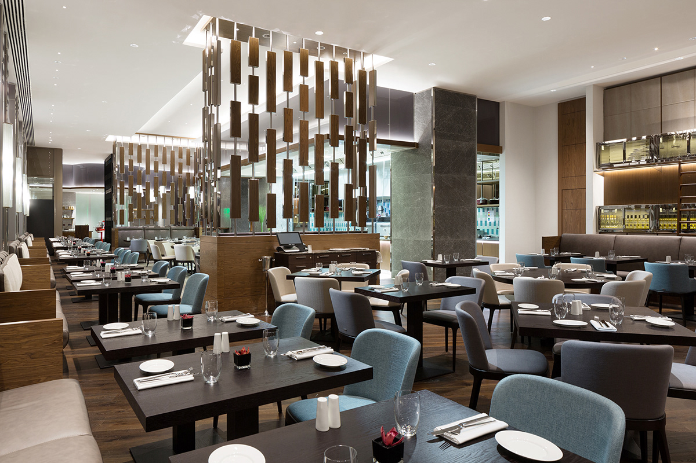
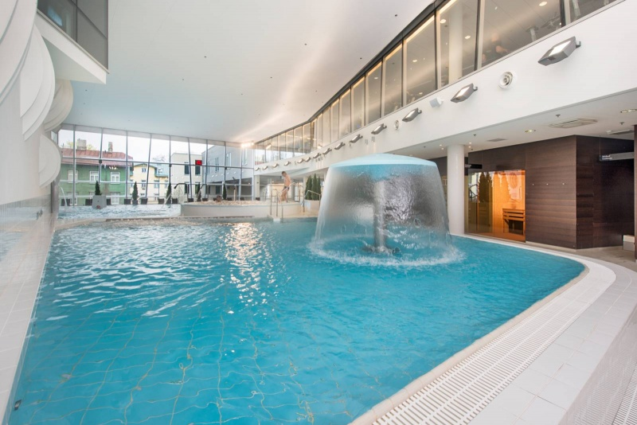

Ваше Идеальное Место для Отдыха и Вдохновения
Гостиничный комплекс "Weekend" – это не просто место для ночлега, это воплощение мечты о настоящем, безмятежном отдыхе. История нашего комплекса началась с желания создать пространство, где каждый гость сможет забыть о суете будней, погрузиться в атмосферу умиротворения и наполниться новыми силами. Мы стремились объединить в себе уют домашнего очага и высокий уровень сервиса, чтобы ваш "выходной" стал по-настоящему особенным.
Наши основатели, страстные путешественники и ценители красоты природы, вложили в "Weekend" свою любовь к деталям, стремление к гармонии и искреннее желание дарить радость. Каждый уголок комплекса, от элегантных номеров до живописных территорий, был продуман с заботой о вашем комфорте и впечатлениях. Мы верим, что "Weekend" – это не просто название, а обещание, которое мы с гордостью выполняем для каждого нашего гостя.
Гостиничный комплекс "Weekend" расположен в живописном уголке природы, где свежий воздух, пение птиц и завораживающие пейзажи создают идеальную атмосферу для полного расслабления. Мы предлагаем разнообразные варианты размещения, чтобы удовлетворить любые ваши потребности:
-
Уютные номера: От классических стандартов до просторных люксов, каждый номер в "Weekend" оформлен с изысканным вкусом, сочетая современный дизайн с элементами природной эстетики. Вас ждут удобные кровати, высококачественное постельное белье, современные удобства и захватывающие виды из окна.
-
Просторные коттеджи: Для тех, кто ценит уединение и домашний уют, мы предлагаем комфортабельные коттеджи, оборудованные всем необходимым для самостоятельного проживания. Идеальный вариант для семейного отдыха или компании друзей.
-
Ресторан "Вкус Природы": Наш ресторан – это гастрономическое путешествие, где мы предлагаем блюда, приготовленные из свежих, местных продуктов. Насладитесь изысканными вкусами в уютной атмосфере, любуясь панорамными видами.

-
SPA-центр "Оазис Спокойствия": Подарите себе незабываемые моменты релаксации в нашем SPA-центре. Широкий выбор процедур, от массажа до обертываний, поможет вам снять стресс, восстановить силы и обрести гармонию.

-
Конференц-залы: Для проведения деловых мероприятий мы предлагаем современные конференц-залы, оснащенные всем необходимым оборудованием.
Часто Задаваемые Вопросы (FAQ)
-
1. Как добраться до гостиничного комплекса "Weekend"?
Мы расположены по адресу Г. Ростов-на-Дону, ул. Набережная 145. Вы можете добраться до нас на личном автомобиле, воспользовавшись навигатором. Также мы предлагаем услугу трансфера из аэропорта. Подробную информацию о маршрутах и расписании трансфера вы можете уточнить у администратора.
-
2. Какие услуги включены в стоимость проживания?
В стоимость проживания обычно включено: проживание в выбранной категории номера, трехразовое питание, доступ к Wi-Fi, пользование бассейном (в зависимости от сезона и типа бассейна). Дополнительные услуги, такие как питание в ресторане, SPA-процедуры, прокат оборудования, оплачиваются отдельно.
-
3. Можно ли привезти с собой домашнее животное?
Мы рады приветствовать гостей с домашними животными в специально отведенных номерах или коттеджах. Пожалуйста, заранее сообщите нам о вашем питомце при бронировании, чтобы мы могли подготовить все необходимое. Может взиматься дополнительная плата за проживание с животным.
-
4. Есть ли в комплексе ресторан и какие часы работы?
Да, в нашем гостиничном комплексе работает ресторан "Вкус Природы". Часы работы ресторана: Завтрак с 7:00 до 10:30; Обед с 12:00 до 15:00; Ужин с 18:00 до 20:30.. Мы предлагаем разнообразное меню, включая блюда русской и европейской кухни, а также вегетарианские и диетические опции.
^^Наверх